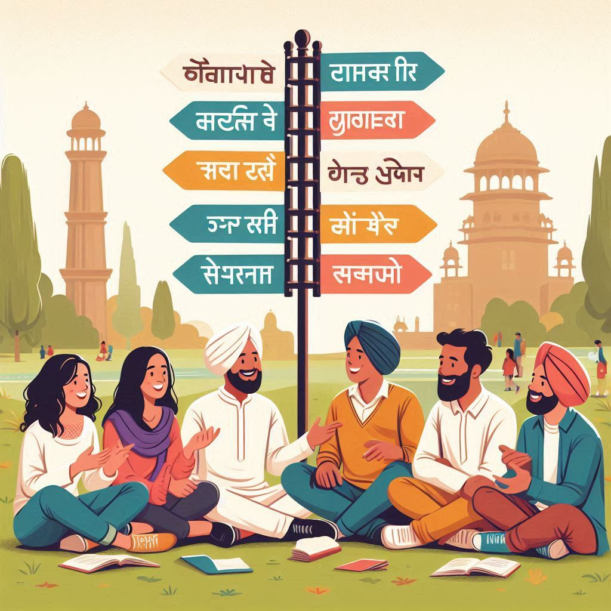
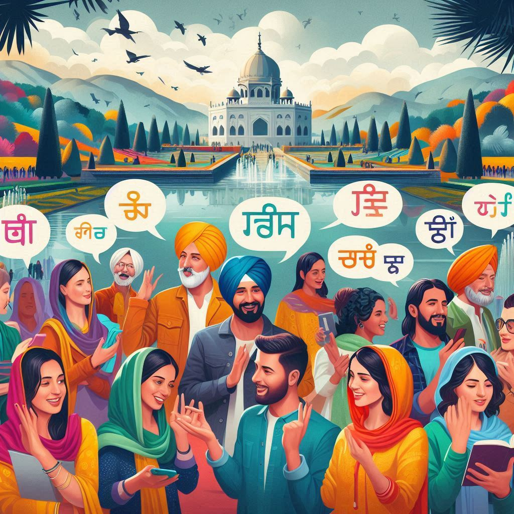

Chandigarh, as a union territory and the capital of both Punjab and Haryana, is a linguistically diverse
city. The languages spoken here reflect the cultural and ethnic makeup of its residents. Here’s an overview
of the primary languages spoken in Chandigarh:
1. Punjabi
- Punjabi is the most widely spoken language in Chandigarh, especially among the Punjabi
community. It is the official language of Punjab and is used in government, education, and daily
communication.
- The Punjabi script is Gurmukhi, and the language has a rich literary and cultural heritage.
2. Hindi
- Hindi is another prominent language in Chandigarh, serving as a second official language. It
is commonly used for communication among people from different linguistic backgrounds.
- Hindi is the most spoken language in India and is used in schools, media, and governmental
communication.
3. English
- English is extensively used as a medium of instruction in schools, colleges, and
universities. It is also prevalent in business, administration, and professional sectors.
- Many residents are bilingual or multilingual, often speaking English fluently.


4. Haryanvi
- Haryanvi is spoken by a significant number of people, especially those from the adjoining
state of Haryana. It is a dialect of Hindi and has its unique characteristics.
5. Other Languages
- Due to the city’s cosmopolitan nature, other languages are also spoken by various communities,
including:
- Urdu: Spoken by a small population, particularly among the Muslim community.
- Bihari dialects: Such as Maithili and Bhojpuri, are spoken by migrants from Bihar.
- English and regional languages: Other Indian languages are spoken by migrants from
different parts of India, reflecting Chandigarh’s diverse demographic.
6. Multilingualism
- Many residents of Chandigarh are multilingual, often speaking two or more languages fluently. This
multilingualism promotes cultural exchange and social harmony among the different communities
residing in the city.
Conclusion
- Chandigarh’s linguistic landscape is a reflection of its rich cultural diversity and
cosmopolitan character. Punjabi, Hindi, and English dominate the communication landscape, while
various regional languages add to the city’s vibrant cultural tapestry. This linguistic variety not
only enhances social interactions but also contributes to the city’s unique identity.